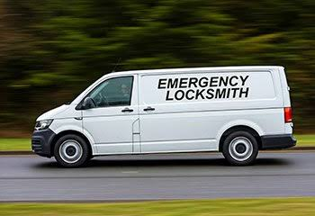
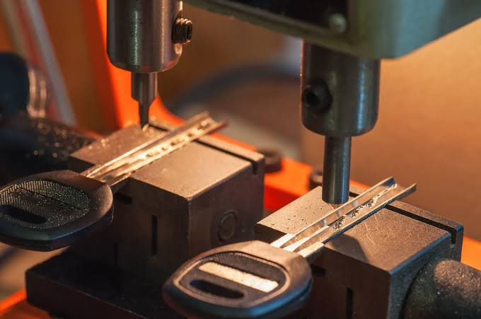
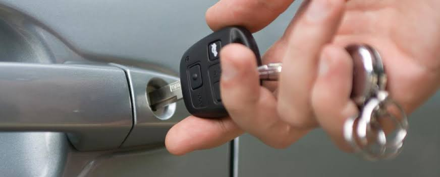

Precision Key Services
Key Cutting & Replacement
Key cutting in Boksburg — house keys, car keys, office keys, duplicate keys. Call 079 106 5911 Request a free estimate
Precision Key Services
Key cutting in Boksburg — house keys, car keys, office keys, duplicate keys. Call 079 106 5911 Request a free estimate
Need key cutting in Boksburg? Whether you need a spare house key, replacement office keys, or a new car key, we provide professional key cutting and duplication services with commercial-grade equipment. Unlike the quick-cut machines at shopping centres that produce rough copies, our keys are precision-cut and tested for smooth operation before we hand them over.
From standard Yale keys and mortice keys to high-security restricted keys and transponder car keys, our Boksburg key cutting service covers it all. Lost your only set of keys? No problem — we can create a new key from the lock itself. Request a free estimate or visit our mobile workshop — call 079 106 5911.
We use quality equipment to produce accurately cut keys that operate smoothly while helping you avoid the frustration of poorly duplicated keys.
Key cutting starts around R250. See the full Boksburg locksmith price guide for other jobs.

Whether you need an extra set of house keys, replacement office keys or assistance after losing your only key, we provide dependable solutions designed around your needs.
House keys, gate keys, window keys, and padlock keys — we duplicate and cut replacement residential keys for all common lock brands used in Boksburg homes.
Office keys, filing cabinet keys, and commercial lock system keys — professional key duplication for Boksburg businesses, with restricted key options for better security.
Lost your last key? We can create a new key directly from your lock — no original required. This works for most residential and commercial locks.
Broken or heavily worn keys that don't turn smoothly? We cut a fresh replacement from the key code or the lock itself, restoring smooth operation.
| Service | Estimated Cost | Average |
|---|---|---|
| Standard Key Cutting | Quote Required | Varies |
| Replacement Keys | Quote Required | Varies |
| Specialty Keys | Quote Required | Varies |
Pricing depends on key type and availability.

Professional equipment helps ensure reliable operation.
Solutions for many residential and commercial lock systems.
We'll recommend practical replacement options when originals are unavailable.
Need replacement keys? Contact our local locksmiths today. Request a free estimate
Free — no obligations

Determine the correct key type.
Produce an accurately matched key.
Confirm smooth operation.
Provide your finished replacement keys.